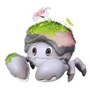

Home首页 / Database数据库 / Budclaw花芽蟹

No. 023
Budclaw花芽蟹
Budclaw has 4 forms. The base stats, the trait and the skill list are the same on all of them — what changes is the type, where it lives, and what it takes to evolve.花芽蟹 共有 4 个形态。基础数值、特性和技能在所有形态上完全一致 —— 变的是属性、栖息地，以及进化要付的代价。
Overview简介
Budclaw is a four-card starter: an earth gust, a 67-power grass beam, a 40-power leaf slash and the basic attack. Its two elements never overlap, which means that whichever one a target resists, the other still lands — and it heads a fork where Shrubclaw keeps that earth-and-grass reading and Geoclaw drops the grass entirely for ice.花芽蟹是一个四张卡的初始：一发土系疾风、一道 67 威力的草系光束、一次 40 威力的叶斩，加上基础攻击。它这两个属性互不重叠，也就是说无论目标抵抗哪一个，另一个都还能打进去 —— 而它带出的分叉里，蟹葱葱保留土+草的读法，晶壳蟹则丢掉草、改成纯冰。
One scale on all six axes, 0–140 — the same one on every species page.六个轴共用一套刻度 0–140，本站每一页的物种都是这套。
- HP生命
- 76
- ATK攻击
- 64
- P.DEF物防
- 93
- M.DEF魔防
- 65
- BREAK击破
- 84
- REGEN回能
- 72
At a glance一眼速览
Mobility探索技能
Tunnel钻地
Goes under the ground, which makes it immune to all ranged attacks, at a stamina cost per second. The hole in that is written on the card: a pound-type skill digs it straight back out and throws it into the air. Against a melee enemy this is close to free; against anything with a ground slam it is a way to be lifted off your feet.钻到地下，免疫所有远程攻击，代价是按秒扣体力。破绽就写在卡上：震地类技能会把它从地里掀出来、打到空中。对近战敌人几乎等于白拿；对会砸地的对手，这是主动把破绽递过去。
Trait特性
Stealth蛰伏
A skill that deals damage adds 1 stack of Momentum, to 6. Tunneling doubles how fast they arrive, which makes the mobility card part of the damage plan too — going underground is how you build. At full stacks, BREAK efficiency +30% for 20 seconds.技能造成伤害时积累 1 层气势，最多 6 层。钻地期间积累速度翻倍，所以那张探索技能卡也是这套输出的一部分 —— 钻下去就是攒层数的方式。满层时击破效率 +30%，持续 20 秒。
Skills技能
Split the way the official page splits them: Combat holds the skills you cast, Innate the basic attack. The list is the species', not the form's — a form does not change it.分法和官方页面一致：战斗技能是你会主动放的那几个，固有技能里是基础攻击。这份表属于物种，不属于形态 —— 换形态不会换掉它。
Combat战斗技能
-
The Luminus Gust砂砾旋舞
Rock土Cores orbit the body for 5.5 seconds, damaging continuously and adding Earth Debuff the whole time. Because it stacks on every tick rather than once per cast, the debuff count climbs far faster than a single-hit skill could manage — and it keeps climbing for the whole window.砂砾绕着身体旋转 5.5 秒，持续造成伤害，全程不断附加【土元素异常】。因为它是每次跳伤都叠、而不是一次技能只叠一层，层数涨得比单段技能快得多 —— 而且在整个窗口里都不会停。
-
Verdant Beam绿意光束
Grass草A beam fired wherever the camera is pointing, with Power that climbs as the hits stay consecutive. Because the ramp hangs on keeping the beam on target, interrupting it throws away what you have built up — so this is a skill you commit to rather than flick on between other casts.朝镜头方向发射一束光，威力随连续命中逐渐提升。因为提升挂在「连续命中」上，中断就会丢掉已经攒起来的那部分 —— 所以这是一个需要你持续按住、而不是在别的技能之间点一下的技能。
-
Leaf Slash叶片飞舞
Grass草Leaves orbit the body and keep dealing damage for 5.5 seconds. The damage comes off the whole body rather than being aimed at a target, so it pays you for standing where several enemies are — and 5.5 seconds is long enough to cover a whole exchange.叶片绕着身体旋转，持续造成伤害，共 5.5 秒。伤害是从身体周围持续产生的，不需要瞄准 —— 所以它奖励你站到多个目标中间；而 5.5 秒也足够覆盖一整个交手回合。
Innate固有技能
-
ATK攻击
Rock土The basic attack: earth, close range, carrying a BREAK tag at the front of its official text. Five species share the card, and like the other tagged ATK cards the tag is part of the description rather than a field with a value of its own — so read it as the melee earth basic attack with a break flag attached.基础攻击：土元素、近距离，官方正文开头还挂着 BREAK 标记。五个物种共用这张卡；和其他带标记的普攻一样，这个标记是正文的一部分，不是有自己数值的字段 —— 把它看成带击破标记的近战土系普攻就好。
Forms形态
-
023A base form基础形态
Budclaw花芽蟹
Rock土Grass草- Where地点
- Zephyrus Landbridge海角丘谷, Nimbus Fields云上草原, Berylline Causeway青石台, Beast Fang Ridge狼牙岭
- Evolves into进化为
- —
-
023B
Mudflat BudclawMudflat 花芽蟹
Rock土- Where地点
- Tideblossom Coast潮花岸
- Evolves into进化为
- —
-
023C
Beach BudclawBeach 花芽蟹
Rock土- Where地点
- Echoback Landing鲸落浅滩
- Evolves into进化为
- —
-
023D
Bay BudclawBay 花芽蟹
Rock土- Where地点
- The Argent Strait鸥鸣湾
- Evolves into进化为
- —
Evolution line进化线
Budclaw
The level and the materials are not shared between forms. Each form's own page carries its own requirement.等级和材料在形态之间并不通用。每个形态的进化条件见它自己的页面。